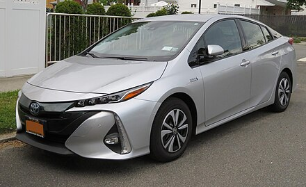

ომპანია დაარსდა, როგორც Toyota Industries- ის გამოყოფა , მანქანათმშენებელი კომპანიისა, რომელიც კიიჩირო ტოიოდამ , საკიჩი ტოიოდამ დააარსა. ორივე კომპანია ამჟამად Toyota Group- ის ნაწილია , რომელიც მსოფლიოში ერთ-ერთი უდიდესი კონგლომერატია. მიუხედავად იმისა, რომ კომპანია ჯერ კიდევ Toyota Industries-ის განყოფილება იყო, მან თავისი პირველი პროდუქტი, Type A ძრავა , 1934 წელს, ხოლო პირველი მსუბუქი ავტომობილი 1936 წელს, Toyota AA, შექმნა .
